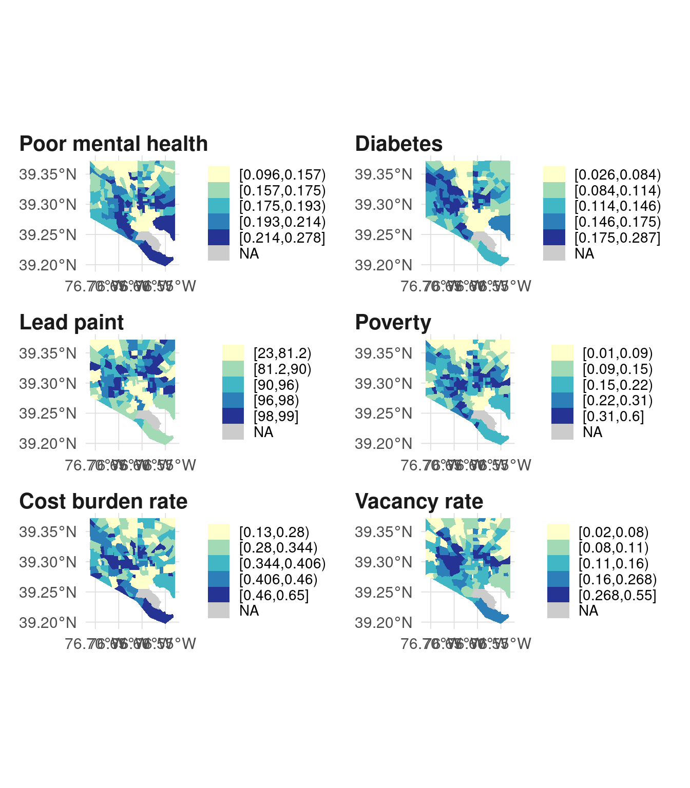

17. Avoiding sad maps
Warm-up
Think of a cause, issue, or argument that you’ve been involved in at some point that’s tied to a place. It can be something big and serious like an activist campaign, something simple like a neighborhood cleanup, or just the assets and locations that make you think your city or neighborhood is the best place to live. Sketch a map that you could use in support of this work. What are the locations you need to show in order to persuade people of your argument? How can you provide the context necessary to truly understand the issue?
Being a responsible mapmaker
If you remember nothing else from this class, remember this: AVOID MAKING SAD MAPS. This is a term I learned at a conference on the launch of the 500 Cities Project, the predecessor to the project whose data is in justviz::cdc. I don’t remember which one of the panelists said it, and I have no idea where my notes are from the conference, but it’s stuck with me. The panelist defined “sad maps” as maps, often choropleths, that just show hotspots of the same depressing patterns across neighborhoods over and over without supplying any sense of neighborhoods’ assets or source of strength.
At that point, I’d been making maps for a year or two, and I’ve been making maps for probably seven years since, and I’m still guilty of making many sad maps. It’s unavoidable, especially when it’s your job to make maps about public health and inequality. That’s why your task isn’t to never make a sad map, but to try to find other ways of doing things. Maybe that means showing distributions instead of neighborhood vs neighborhood or town vs town comparisons, or contextualizing the sad data with community strengths and history, or using a visualization that’s not a map, or not visualizing it at all, or having different people at the table making decisions on how to tell the story. It might also mean using the names and boundaries of places that residents use, which aren’t always the same as what the government or researchers use. 1
1 The Anti-Eviction Mapping Project, one of the projects for the second case study, describes the challenge of balancing research on hardship with empowering stories, and give a lot of credit to the fact that their work is community-led.
This was one of the major reasons I had for pushing my organization away from choropleths—I got tired of making the same sad map. It was doubly frustrating because I lived in one of those “sad” hotspots in New Haven, and I didn’t like thinking I might be reinforcing my neighbors’ or my own disenfranchisement.
Here’s an example with Baltimore:
Those are different variables, and while the two from the CDC Places data (poor mental health and diabetes rate) are in part modeled using data from the ACS, our naive hypothesis would be that the maps look different. But they look pretty similar—not exactly the same of course, but with similar patterns. I’d consider these sad maps, and I wouldn’t want to present them all together like this without additional historical context.
However, in Baltimore we have an example of the sad map being reclaimed in a way: Dr. Lawrence Brown coined the “Black Butterfly” (Brown (2021)) to describe the pattern of majority-Black neighborhoods fanning out in East and West Baltimore, with the “White L” cutting through them. He’s then studied how these sad indicators play out across the Black Butterfly, but uses this data in a way that aims to be empowering. It’s become the sort of image you can’t unsee once you see it, and it invites others to describe their research and surroundings in that same framework (here’s one example, Urban Institute (2019)).
Brown, L. T. (2021). The black butterfly: The harmful politics of race and space in America. Johns Hopkins University Press.
Urban Institute. (2019). The Black Butterfly: Racial Segregation and Investment Patterns in Baltimore. https://urbn.is/baltimore
Here are those same maps with majority-Black tracts outlined:
Again, it’s not exactly the same every time, but one of the purposes of data visualization is understanding and contextualizing patterns, and one of the purposes of this sort of branding is bringing that idea to life. After all, when was the last time you saw an urban farming program named after a data visualization??